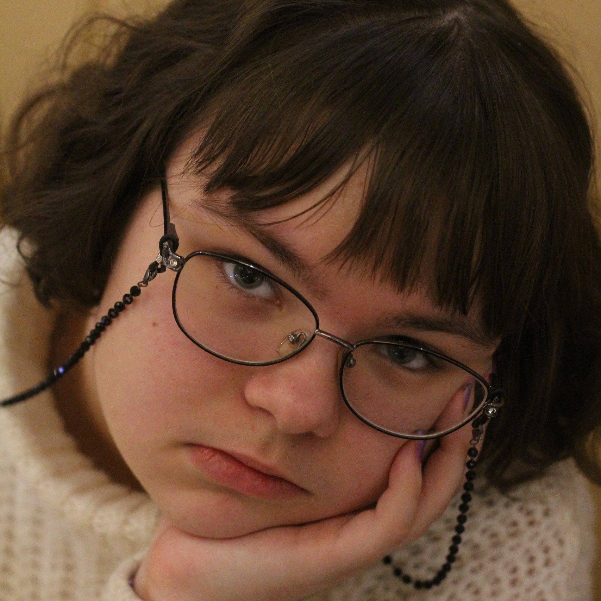
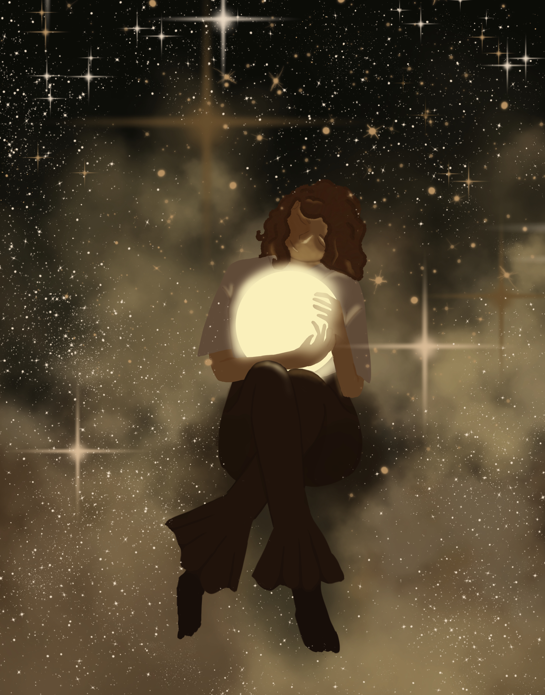
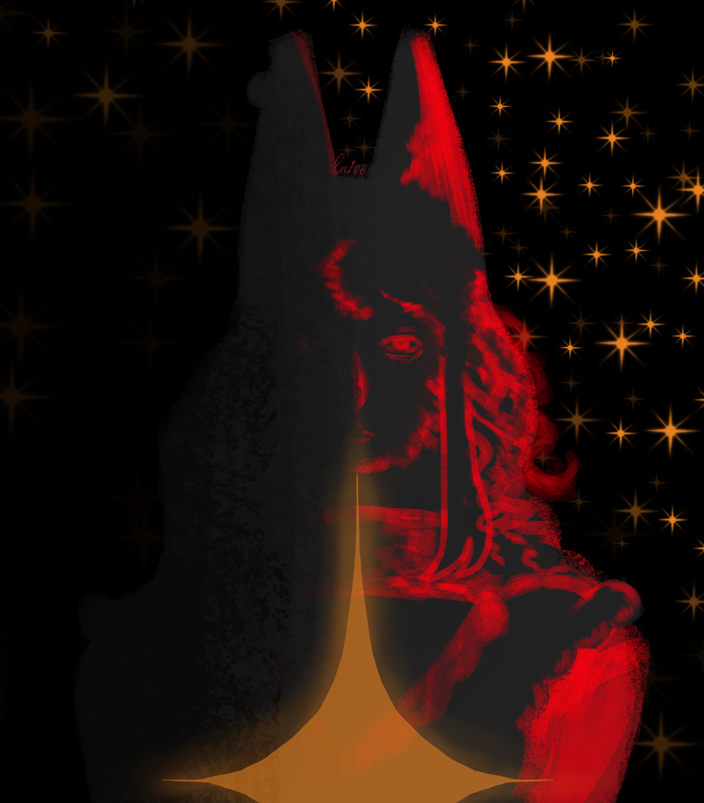

Ксения Лифарь
Дата рождения: 06.06.2008
Город: Белгород
Телефон:+7(904)533-00-00
Студентка ОГАПОУ "Белгородский индустриальный колледж"

Обо мне
Родилась и живу в Белгороде. Окончила 9 классов в Школе № 27 г.Белгорода, после поступила в Белгородский индустриальный колледж и обучаюсь на профессию Web-разработчика. Вне учебного времени увлекаюсь рисованием: рисую традиционно и с помощью графического монитора, иногда пробую себя в анимации. Относительно недавно начала вести канал, где переодически выкладываю свои работы на маленькую аудиторию. В планах работы канала:
- Выкладывать работы
- Рисунки
- Скетчи
- Аниматики
- Моменты из жизни
- Обсуждение новостей в мире
Мои работы
(Малая их часть)



Все мои иллюстрации построены вокруг вселенной созданной мной на мотив таинственного альбома, чей мотив и настроение
помогли разработать базовый каркас того, чего я хочу видеть у себя. Дизайн персонажей был собран на основе личной доски в Pinterest,
которую я время от времени обновляю в поисках новых дизайнов.
Крайние левая и правая иллюстрация содержат моих оригинальных персонажей - Хёну и Ули. В сюжете, созданном ранее они являются работницами сферы услуг. Хёна работает алхимиком, проводя эксперементы на заказ. Ули - антропоморфная лиса, выполняющая работу на заказ для алхимиков.